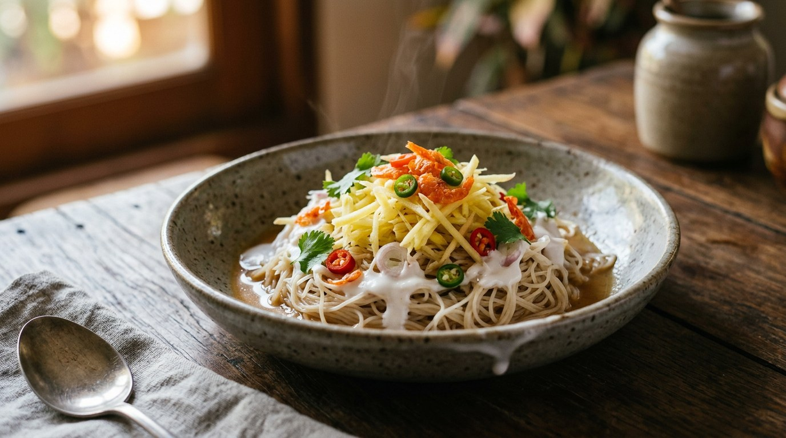

The old hot-season cooler from the central plains: room-temperature rice noodles under lightly salted coconut cream, with fresh pineapple, raw garlic, young ginger, pounded dried shrimp and soft poached fish balls — everything seasoned at the table, nothing cooked together.

ขนมจีนซาวน้ำ breaks into three parts: ขนมจีน, the soft fermented rice noodles; ซาว — the Royal Institute dictionary defines it as rinsing rice in water, but the older and Isan sense is mixing ingredients together in a bowl; and น้ำ, here the lightly salted coconut cream that bathes the noodles. No curry, no chilli paste, no soup. It is a central-plains dish built for April, and every Thai source frames it the same way: a proper meal, but savoury and cool enough to eat when the heat takes your appetite.
Silpa-Mag, the arts-and-culture magazine of the Matichon group, has traced the oldest record: the cookbook แม่ครัวหัวป่าก์ by Thanphuying Plian Phasakornwong, from around the early 1900s, contains a rice dish called เข้าซาวน้ำ — ginger, finely chopped pineapple, raw sliced garlic and pounded dried shrimp, dressed with fish sauce, sugar and lime, with whatever sour fruit was to hand (green mango, madan, pomelo, rakam). It is the same topping set as khanom jeen sao nam, minus the coconut cream: a rice salad that later jumped onto rice noodles and into a bath of coconut milk. A later court version, from Princess Yeowapha Phongsanit's ตำรับสายเยาวภา, kept the same toppings but swapped in Italian vermicelli for the rice noodles, fresh milk for the coconut cream, and chicken balls for the fish.
And then it nearly vanished. Kapook opens its recipe with a warning that younger Thais may never have heard of the dish; krua.co calls it one of the summer foods of the old days, and says every family's version is right — อร่อยตำรับใครตำรับมัน. What all six sources agree on is the grammar of the plate: the coconut cream is fresh-pressed and only lightly salted, never split by boiling; the pineapple is structural, not decorative; the garlic, ginger and chillies go in raw so they stay sharp; the dried shrimp carries the salt; and the final seasoning — sugar, fish sauce, lime — happens at the table, because no two pineapples are alike.
| Thai | English | Amount |
|---|---|---|
| มะพร้าวขูดขาว | Grated mature coconut (for pressing) | 500 g |
| น้ำอุ่น | Warm water (for pressing) | 4 cups |
| สับปะรดสับละเอียด | Pineapple, finely chopped | 2 cups |
| กระเทียมไทยซอยบาง | Thai garlic, thinly sliced | ¼ cup |
| ขิงอ่อนซอย | Young ginger, julienned | ½ cup |
| กุ้งแห้งป่น | Dried shrimp, pounded | ½ cup |
| น้ำตาลทรายไม่ฟอก | Unrefined sugar (for the table) | ¼ cup |
| พริกขี้หนูสวนซอย | Bird's eye chillies, sliced | 15 |
| มะนาวผ่าซีก | Limes, cut into wedges | 2 |
| น้ำปลา | Fish sauce (for the table) | ¼ cup |
| ขนมจีน | Fresh khanom jeen rice noodles | 12 bundles |
| ไข่เป็ด/ไข่นกกระทา | Boiled duck or quail eggs, to serve | 4 |
| เนื้อปลากรายขูด | Grated featherback fish (for the jang-lon) | 300 g |
| พริกแกงคั่ว | Roasted curry paste (for the jang-lon) | 1 tbsp |
| เกลือสมุทร + น้ำ | Sea salt dissolved in water (for the jang-lon) | 1 tsp + 1 tbsp |
| ผักชีซอย | Chopped coriander (for the jang-lon) | 1 tbsp |
The two recipes this is drawn from are word-for-word the same — Krua.co and Aroifin both press 500 g of coconut into 3 cups of head cream and 2 of thin milk, both season the fish balls with roasted curry paste, both finish with butterfly pea flowers for colour. The 2-serving home pot (Kapook, by tukata001): ready-made jang-lon poached straight in 2 cups of salted coconut milk, pickled garlic instead of fresh, soft-boiled hen's eggs, and a prik nam pla of chillies, fish sauce and lime. The shortcut pot (Wongnai, by Pawarit): boxed coconut milk cut 1:1 with water, the fish worked with สามเกลอ (coriander root, garlic, pepper) instead of curry paste — he admits it is the lazy stand-in for the formal recipe — and dried shrimp dry-roasted in a pan before pounding. The big-batch pot (Wongnai, by วิ บาก พอยัง): 2 kg of coconut for 1 kg of noodles, bird's eye chillies insisted on ("more fragrant than jinda"), and the same rule shouted twice: never let the cream boil until it splits.
What goes into the jang-lon. Aroifin and Krua use roasted curry paste (พริกแกงคั่ว) with the fish, and Wongnai's Pawarit confirms that is the formal recipe — the one set for the Thai food-craftsman exam — before admitting he uses สามเกลอ (coriander root, garlic and white pepper) instead because it is already in his fridge. Silpa-Mag describes the same garlic-pepper-coriander-root mixture. Kapook's description is plainer still: fish pounded with salted water and nothing else. All three camps call it jang-lon and all of them float it in liquid to cook it.
Fresh garlic or pickled. Aroifin, Krua and both Wongnai recipes slice fresh Thai garlic thin. Kapook's tukata001 grew up with the pickled version and prefers it — "sweeter, with a touch of the brine" — and says either is correct.
What salts the coconut milk. Kapook and Wongnai's big-batch pot put salt in the milk and nothing else. Wongnai's Pawarit adds half a teaspoon of sugar to the milk as well, though he warns it must not go sweet. Aroifin and Krua leave the milk seasoned only by the jang-lon and the salt they carry, and keep all the sugar at the table.
The eggs. Aroifin and Krua serve boiled duck or quail eggs. Kapook boils hen's eggs to jammy yolks (ten minutes from cold, then straight into cold water) and halves them over the noodles. Wongnai's Pawarit says simply "boiled egg, as you like".
The sugar. Wongnai's big batch uses plain white sugar, Krua specifies unrefined sugar, and — Krua notes — the Ratchaburi and Phetchaburi cooks of the old days used boiled-down coconut palm sugar instead. All of it sits at the table, never in the pot.
This recipe is translated from the following Thai-language sources. Where they disagree, we've said so.
1. Krua.co — "ขนมจีนซาวน้ำ" (the classic two-pressing recipe used here; the palm-sugar note from Ratchaburi and Phetchaburi) — krua.co
2. Aroifin — "วิธีทำ ขนมจีนซาวน้ำ เครื่องแน่น ๆ ทำเองได้ อิ่มกันทั้งบ้าน" by thanyachanok (the identical six-serving recipe; jang-lon with roasted curry paste) — aroifin.com
3. Silpa-Mag — "ขนมจีนซาวน้ำ สูตรโบราณเฉพาะครัวไทยภาคกลาง เหมาะจะกินหน้าร้อน" (the history: the แม่ครัวหัวป่าก์ rice version, the court version of Princess Yeowapha) — silpa-mag.com
4. Kapook — "ขนมจีนซาวน้ำ เมนูโบราณเครื่องเยอะ พร้อมสูตรแจงลอน" by tukata001 (the pickled-garlic, soft-boiled-egg home version) — cooking.kapook.com
5. Wongnai — "สูตร ขนมจีนซาวน้ำ" by วิ บาก พอยัง (the big-batch version; bird's eye chillies; two-stage pressing) — wongnai.com
6. Wongnai — "ขนมจีนซาวน้ำแจงรอนปลากราย" by Pawarit Sukhasvasti (the shortcut version: สามเกลอ, boxed coconut 1:1, dry-roasted shrimp) — wongnai.com